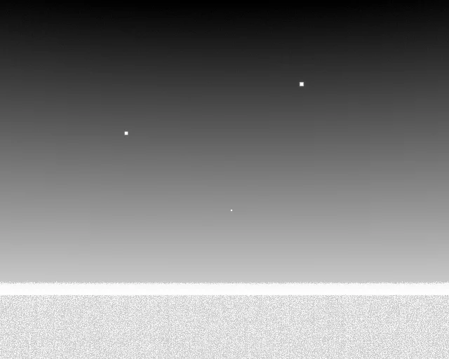
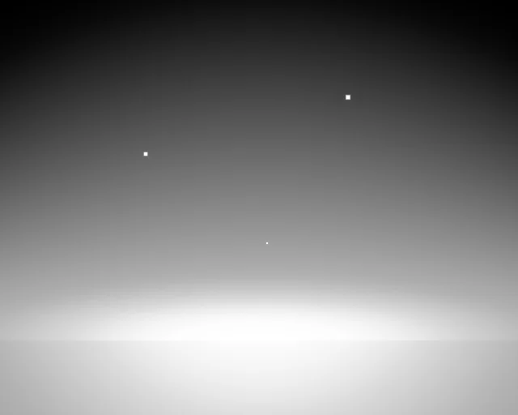

One kernel, four bands
The same quadrotor, the same weather, the same sun, the same instant, through four spectral bands. In LWIR it is four hot motor bells against a cold sky; in NIR it is a black silhouette against a bright one. Two different detection problems out of one radiance kernel — which is the argument for treating bands as data rather than code. Hover or tap to play.
The same argument as a vessel, an aircraft and a point target →
One temperature per object, or one per point
The same 30-minute mission, filmed twice by the same camera at the same instants. Over the whole flight the object-wise aircraft moves 0.5 K — it simply tracks the air — while the deck alone moves 16.6 K and runs up to 29.9 K away from it. One temperature per object is not a coarser picture of a thermal scene; it is a different scene, and it is the defect this project exists to fix.
What the two solvers do over the whole mission →
What makes a frame read as a thermal camera
Drag the handle. Both halves are one scene at one instant through one set of optics, and the only difference is the correction — but they do not differ the way a reader expects. Without a flat field the 8-bit picture carries the optics' own vignetting, and plateau equalisation spends its range flattening that: the left half is smooth and its corners are dark. Correct the field and the same AGC has range left over for the scene, so the sensor's own grain arrives with it. That structure is what a viewer reads as "thermal camera" long before radiometric accuracy is noticeable, which is why the detector and noise chain (ADR 0053–0057) is modelled rather than approximated with Gaussian noise.


no flat fieldflat-fieldedThe signal chain
The signal order of the specification. Every link is a recognised physical model whose units close; every approximation is a written decision rather than an accident.
What this one does differently
per-point temperature
Every cell of a surface holds its own energy balance. One temperature per object is not a coarser thermal scene — it is a different one.
bands are data
LWIR, MWIR, SWIR and NIR come out of the same kernel. Adding a camera is a YAML file, not an edit to the radiance path.
an engine-free core
src/irsim/ imports no engine module, so the physics is testable in seconds on a laptop with no GPU. A test fails the build if that stops being true.
approximations on the record
153 decision records say which fidelity was taken on purpose, and what it would cost to raise it.
The repository, counted at build time
src/Where the plan is
Phases run repair → point-wise physics → aerial → maritime → ground → cross-cutting; the order is the owner's, recorded in ADR 0003.
Next, in order
TC.9Thermal coupling View factors between any two parts, by ray casting. ADR 0088's closed form is parallel rectangles only and raises on anything else, so a downloaded car cannot radiate onto the road and a battery cannot warm the shell around it. A NumPyAT.24Atmosphere, sky and materials Band quadrature that cannot step off the support.quadrature_gridpads one node past the response when the interval count is odd, so Simpson straddles a cliff where R ends non-zero (+33 % at 300 K on an odd-count top-hat; `class_weighPT.25Point-wise surface temperature The forced-convection floor is convective only.ConvectionParamsa = 5, b = 4 tracks Jürges' 5.7 + 3.8v, fitted to total plate loss with radiation in, while the balance adds εσT⁴ itself; h_free uses a fixed 300 K (`scene_forcing.py:15PT.26Point-wise surface temperature In-plane conduction uses in-plane conductivity.lateral_operatorandmesh_lateral_operatortakeconductivity_w_mk, the through-thickness value (carbon 0.8; in-plane ~7). Addconductivity_inplane_w_mkto the material schema, defaTC.10Thermal coupling Heat exchange between objects, as one scene switch.thermal.object_exchange: truecouples every solved surface and node to what it sees — longwave by TC.9's factors, net of the sky each hides (ADR 0088's rule, any shape) — so a car wa
Read next
What it produces
Frames and clips, with what each one demonstrates.
Physics model
The specification the code cites section by section.
Status
Subsystem by subsystem: what is implemented and what it is verified against.
The test suite
Every test in the repository, with what it asserts.
Validation
Measured against public imagery — including where it fails.
Decision log
Why each approximation was chosen.
Code map
Every module in the tree, measured at build time.